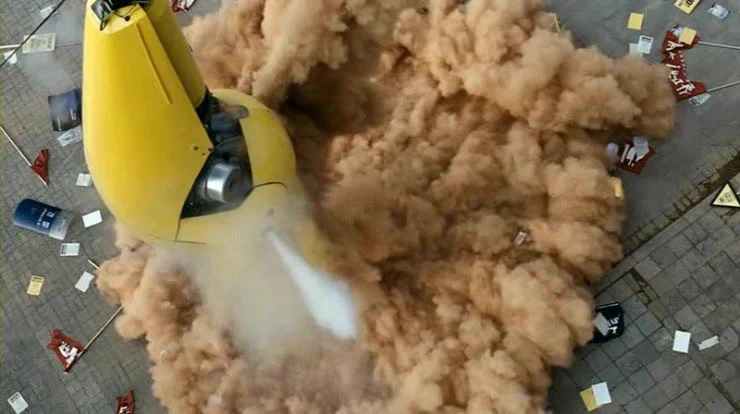

어릴때 : 괴물잡으려고 저거 뿌리는거 아닌가? 사람들이 왜케 난리지?
다 크고 난 뒤 : 개씻팔 미국이 괴물을 핑계로 서울 한복판에 독가스를 살포한다!!!!!
생각보다 더 무지막지한 장면이었음...

어릴때 : 괴물잡으려고 저거 뿌리는거 아닌가? 사람들이 왜케 난리지?
다 크고 난 뒤 : 개씻팔 미국이 괴물을 핑계로 서울 한복판에 독가스를 살포한다!!!!!
생각보다 더 무지막지한 장면이었음...


총 맞으면 죽던데 걍 수방사 출동시키면 되는거였잖아
저 때 머더라 감염병 어쩌고 하지 않앗나
아 맞다 그랬었지
.....근데 저거 방구차 몇번 한다고 효과는 없을 것같은데
너 이자식 지금 미국이 만든 에이션트 옐로우의 효과를 의심하는거냐!
에이션트 옐로우 뿌리니 괴물 어쨋든 죽엇죠?
에이전트 옐로우
고대의 노랑은 대체 뭐야
미국이 월남전에서 사용한 고엽제 "에이전트 오렌지"에서 따온 이름임. 그리고 고대는 '에이전트(요원)'이 아니라 '에인션트'임
원댓글에 에이션트라고 해놨잖아......
아뿔싸
사실 효과도 없고 의미도 없는 짓이라서 영화의 메시지가 부각되는 그런거임
괴물 자체는 물론 사람을 해치고 잡아먹긴 하지만 총으로도 잡을 수 있는 평범한 맹수에 불과한데
괴물이 생겨난 원인인 화학물질 무단 방류는 적당히 은폐되어버리고, 미국측이 괴물과 접촉한 미군병사가 바이러스 증세로 죽었다면서 방역 인원들만 남기고 다 철수시켜버림. 한국 정부는 여기에 질질 끌려다니는 한편, 강두 가족을 비롯한 피해자들에게는 일절 관심이 없는 모습을 보여줌. 하지만 강두를 붙잡았을때 미군 소속 의사가 말하듯 바이러스가 있다는 근거는 찾지를 못했음. 그러니까 이 장면은 있지도 않은 바이러스랑 화학물질로 만들어진 괴물 잡겠다고 또 다시 한강에 화학무기를 뿌려대는 사회의 무능함과 무심함이 극에 달하는 장면인 것임. 저 화학물질 방사기(?)는 다리 밑에 메달리며 쉬는 괴물의 모습과 유사한 실루엣. 괴물은 그냥 동물이고 진짜 괴물은 사회인거임ㄹㅇㅋㅋ
정작 맹수에 불과한 괴물은 그냥 평범한 가족에 불과한 강두네가 줘패서 때려잡고 사회의 무관심 속에 딸 현서는 죽고 현서가 끝까지 지킨 남자애만 살아남음. 괴물 맷집 보면 걍 처음에 군 투입해서 총으로 존나 쐈으면 죽었음ㅋㅋㅋ
괴물맘들이 시위할듯ㅋㅋ
맞우
아무도 괴물에는 관심이 없고 괴물로 부터 일어난 시사에만 관심이 있지
썸넬 황올인줄
나도 치킨으로 보고 들어옴ㅋㅋㅋ
에이전트 옐로우가 베트남때 뿌렸던 에이전트 오렌지 고엽제 모티브였을줄은 몰랐지;;;;
근데 저 괴물도 미군기지에서 오폐수 방류해서 나온거잖아
사실 감독이 만든거래
사실 저안에 오달수 있음
오폐수씨는요, 말이 너무 많아요...
오폐수(포름알데히드)
고딩때 과학교사가 실제로 저거 붓는 순간 괴물도 죽고 영화 끝날거라 했는데 ㅋㅋ
않이 솔까 가방채로 먹혔으면
누구나 가방에 면도날이나 칼 가위 같은거 있지않음?
그걸로 식도 찢고 배 찢고 나오면 되는데 말안됨
통째로 먹이를 삼키는 파충류들의 경우
먹히는 짐승들은 대게 안에서 꼼짝 못하고 내장에 짓눌려 질식해 죽음
고래도 아니고 안이 뭐 얼마나 여유있겠음
주로 걔네들은 손이나 도구가 없자너
질식해 죽는것도 잘보면 뱀 뱃속에서 한참동안 꿈틀댐
그 정도 시간이면 면도날로 배 갈르기 충분함
걔들도 발톱 있고 뼈도 단단하고 쪼개지면서 아주 날카로워지기도 함. 그런 생물들 내장은 상당히 질김. 물론 그래도 면도날이면 될거 같기도 한데...
중요한건 꿈틀댈 수 있다는게 팔다리를 자유롭게 움직여서 가방이나 주머니에 든 물건을 꺼낼 수 있다는 뜻은 아님 옴짝달싹 못 해도 몸통을 꿈틀댈수는 있으니까. 보호 수트 입고 아나콘다한테 먹히는 실험 한거 있는데 그것도 다른 문제보다 압박감이 너무 심해서 중단함 영화속 괴물도 식도에서 겨우겨우 끄집어 내는 장면 있으니까 뭔가 비슷하지 않을까
너가 잘못 알고 있는게 있는데
그 실험은 나도 봤고
아나콘다한테 먹힌게 빡센게 아니고
아나콘다가 몸통으로 쪼이는 압력이 너무 심해서 숨을 못쉬겠다고 한거임
아나콘다 같은쉑이 쪼이기로 질식사 시킨다음에 잡아먹으면
이미 뒤져있으니까 당연히 어쩔수 없지만
원점으로 돌아와서
여기는 괴물로 얘기를 시작한거자나
한강 괴물은 그런 쪼이기 작업없이 꿀꺽 꿀꺽 쳐묵하는애자나
설정이 어류니까
그래서 몸속에 들어가도 내가 일정 시간 의식이 있을거임
그럼 그새끼는 뒤지는거임 아주
확신의 N, T다 이녀석
어케 알았짘ㅋㅋㅋㅋㅋㅋㅋㅋㅋㅋㅋ
어릴때 : 와 미군 씹새끼들
커서 : 미군 악마화 하려는 영화였구나
ㄹㅇ 그래서 그냥 영화는 영화로 보고 미국의 모범적인 동맹국 시민으로 살아야제
게시글 미리보기 짤만 봤을때 탕수육인줄
괴물이 생각보다 맷집이 구리긴 했음 걍 예비군 3명한테 m16만 줘도 잡겠더라 ㅋㅋㅋㅋㅋㅋ
우리가 베트콩이냐!!!! 살포를 중단하라!!!